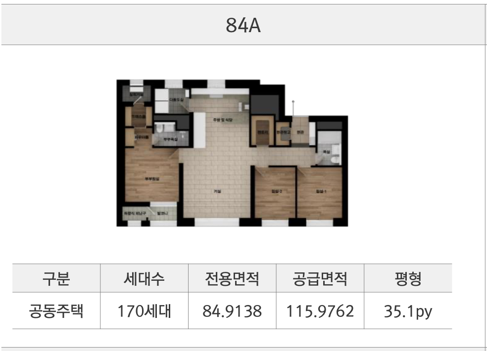
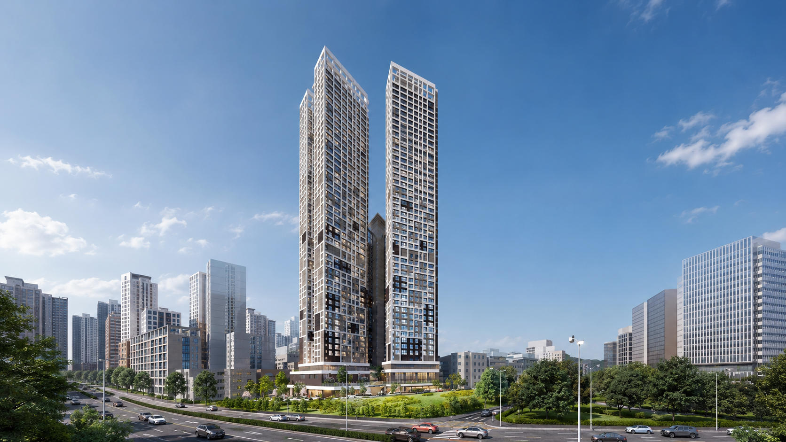
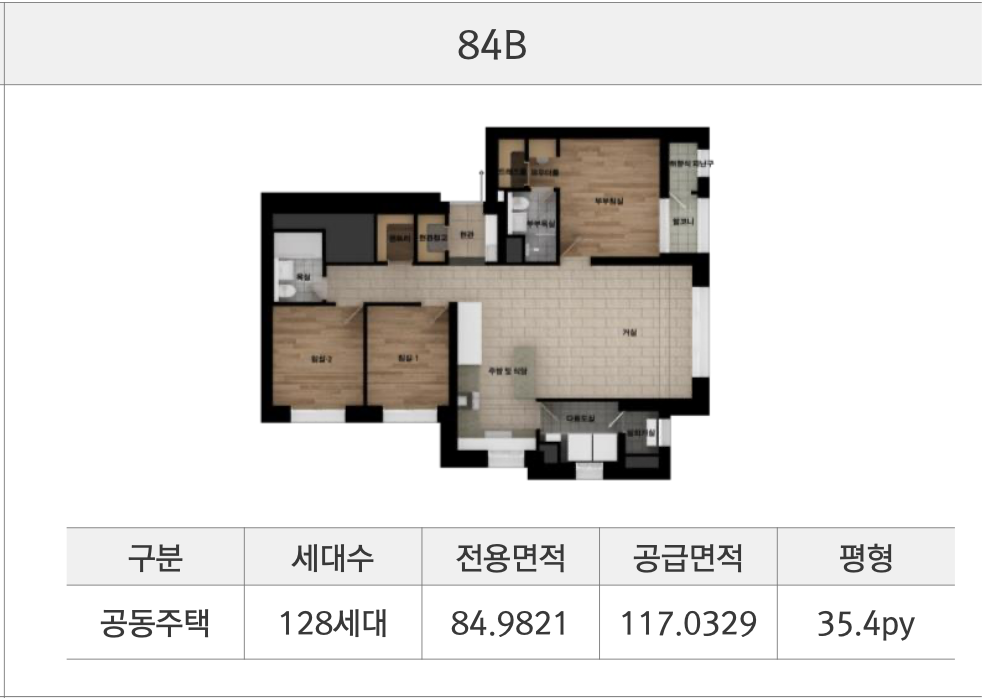
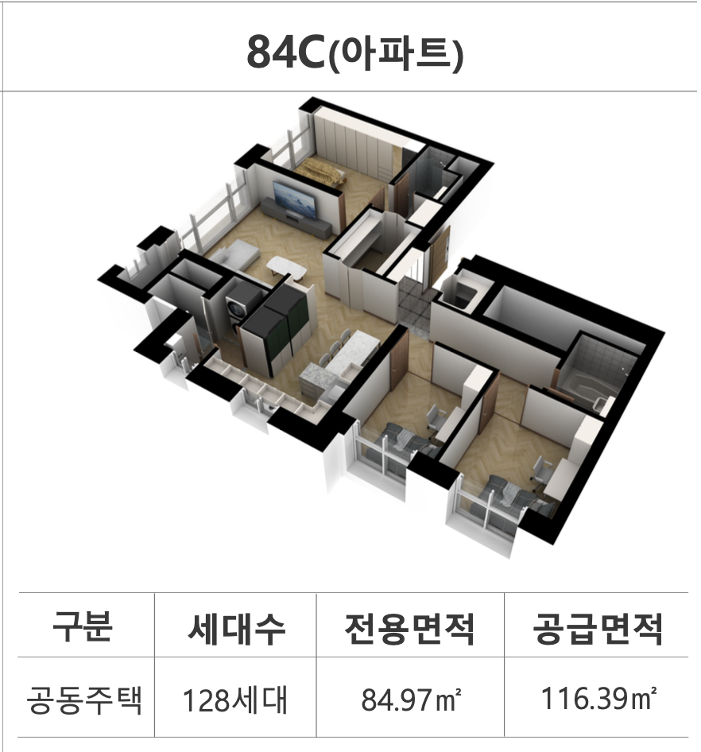
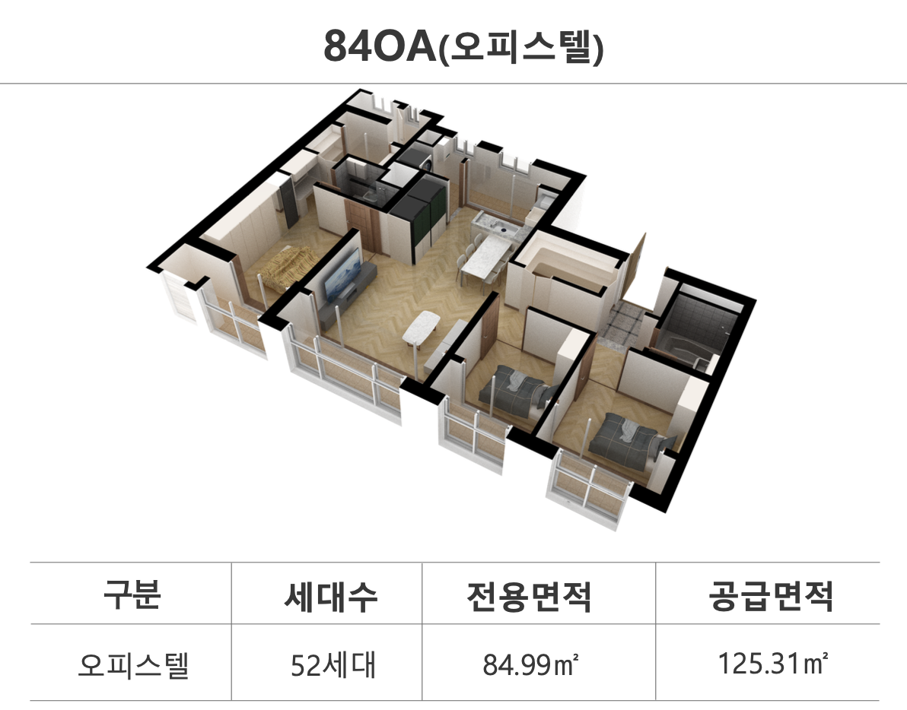
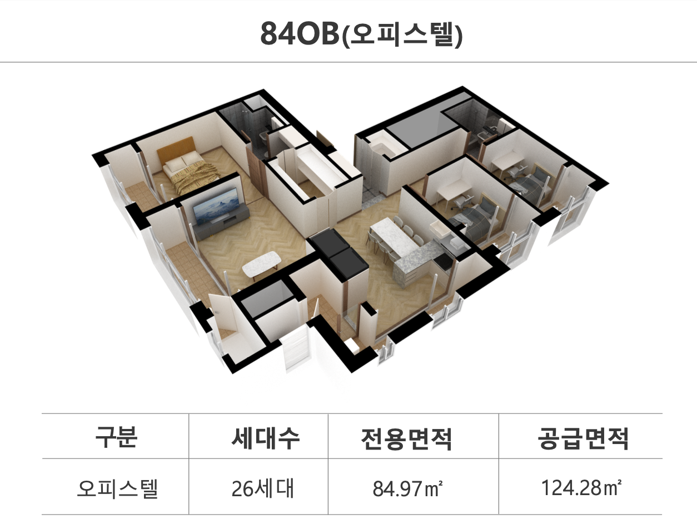

84A TYPE전용 84㎡ A 평면도
선호도 높은 판상형 구조로 채광과 통풍을 극대화한 아파트 타입입니다. 혁신적인 공간 설계로 쾌적한 주거 환경을 제공합니다.

청주 가경 대장 입지 · 49층 초고층 랜드마크
“청주의 모든 인프라가 걸어서 닿는 곳, 가경 하트리움 더 센트럴”
분양가, 평면도, 입지, 관리비, 모델하우스 방문예약까지 핵심 정보를 빠르게 안내해 드립니다.
분양 안내
가경 하트리움 더 센트럴은 청주 흥덕구 가경동 생활권을 중심으로 관심을 받는 민간임대 주거 상품입니다. 본 홈페이지는 예비 고객이 검색하는 분양 조건, 평면도, 분양가, 입지환경, 관리비, 방문예약 정보를 한 화면에서 확인하도록 구성했습니다.
청주 가경동 분양, 청주 민간임대, 가경 하트리움 분양가, 가경 하트리움 평면도 등 세부 키워드 검색에서도 본문 내용이 명확히 노출되도록 각 주제를 독립 섹션으로 정리했습니다.
평면도
가경 하트리움 더 센트럴의 공식 평면도입니다. 전용 84㎡ A·B·C 아파트 타입과 84㎡ OA·OB 주거형 오피스텔 타입의 공간 설계를 비교해 보세요.

84A TYPE선호도 높은 판상형 구조로 채광과 통풍을 극대화한 아파트 타입입니다. 혁신적인 공간 설계로 쾌적한 주거 환경을 제공합니다.

84B TYPE가족 구성원 간의 프라이버시를 존중하는 타워형 구조의 아파트 타입입니다. 트렌디하고 세련된 라이프스타일을 제안합니다.

84C TYPE우수한 개방감과 실용적인 공간 배치가 매력적인 아파트 타입입니다. 넉넉한 수납과 효율적인 구조를 자랑합니다.

84OA TYPE아파트와 동일한 구조의 주거형 오피스텔 타입입니다. 넉넉한 수납공간과 맞춤형 특화 설계가 돋보입니다.

84OB TYPE효율적인 동선과 개방감 있는 공간 배치가 돋보이는 오피스텔 타입입니다. 쾌적하고 실용적인 공간을 제공합니다.
분양가
분양가, 보증금, 임대료, 계약 조건은 타입과 선택 사항에 따라 달라질 수 있습니다. 금액 정보는 검색 유입이 큰 핵심 키워드이므로, 공식 자료가 확정되면 표 형태로 빠르게 업데이트하는 것이 좋습니다.
현재 페이지에는 ‘가경 하트리움 더 센트럴 분양가’, ‘청주 가경동 민간임대 보증금’, ‘가경 하트리움 계약 조건’ 검색을 고려해 관련 문구와 상담 동선을 배치했습니다.
입지환경
입지 섹션은 네이버 검색에서 체류 시간을 높이는 핵심 콘텐츠입니다. 교통, 생활, 교육, 자연환경을 카드형으로 분리해 빠르게 비교할 수 있게 했습니다.
청주고속버스터미널, 시외버스터미널, 주요 간선도로 접근성을 중심으로 광역 이동 편의를 안내하세요.
대형 유통시설, 병원, 관공서, 문화시설 등 가경동 생활권의 실제 이용 편의성을 정리하세요.
인근 초·중·고와 학원가 접근성은 실수요자가 많이 검색하는 정보이므로 정확한 학교명을 확인해 반영하세요.
공원, 산책로, 수변공간 등 쾌적성 관련 사진과 설명을 추가하면 입지 검색 유입에 도움이 됩니다.
민간임대
민간임대는 초기 자금, 거주 안정성, 청약 부담, 계약 조건을 함께 비교하는 수요가 많습니다. 가경 하트리움 더 센트럴 페이지에는 민간임대 장점과 확인해야 할 조건을 분리해 배치했습니다.
검색 문구는 ‘청주 민간임대’, ‘가경동 민간임대’, ‘가경 하트리움 민간임대’, ‘청주 임대아파트 분양’까지 확장해 본문에 자연스럽게 반영했습니다.
관리비
관리비는 민간임대 검색 고객이 실제 계약 전에 반드시 확인하는 항목입니다. 정확한 관리비는 입주 시점, 세대 면적, 사용량, 운영 기준에 따라 달라질 수 있습니다.
이 섹션은 ‘가경 하트리움 관리비’, ‘청주 민간임대 관리비’, ‘가경동 임대아파트 관리비’ 검색을 고려해 관리비 구성 항목과 상담 체크리스트를 제공합니다.
사진 자료
첨부해 주실 사진은 아래 위치에 배치하면 됩니다. 이미지 파일명과 대체텍스트를 키워드 중심으로 맞추면 네이버 이미지 검색에도 유리합니다.


FAQ
충북 청주시 흥덕구 가경동 일원으로 안내됩니다. 정확한 현장 위치와 홍보관 위치는 공식 안내자료 확정 후 업데이트하세요.
금액 정보는 타입, 계약 조건, 공식 고지 기준에 따라 달라질 수 있습니다. 확정 자료를 받으면 분양가 표와 상담 CTA를 함께 업데이트하는 것이 좋습니다.
가경 하트리움 더 센트럴은 전용 84㎡ A, 84㎡ B, 84㎡ C 아파트 타입과 84㎡ OA, 84㎡ OB 주거형 오피스텔 타입 등 총 5가지 타입을 제공하며, 평면도 섹션에서 각 타입별 상세 평면도를 확인하실 수 있습니다.
관리비는 공용 관리비, 세대별 사용료, 부대시설 운영 기준에 따라 달라집니다. 입주 시점의 관리 규약과 고지 기준을 확인해야 합니다.
더 알아보기
공식 블로그의 상세 분석 포스팅과 네이버 TV 소개 영상을 통해 단지 정보를 더 편리하게 확인하실 수 있습니다.
방문예약
분양가, 평면도, 민간임대 조건, 관리비, 입지 상담은 예약 후 방문하면 더 빠르게 확인할 수 있습니다.